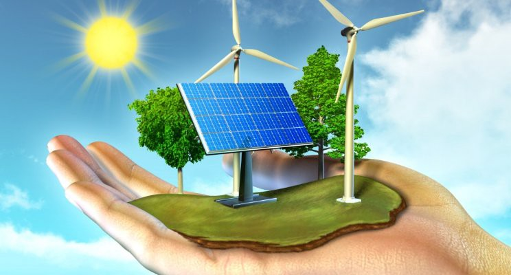

UNIT2

In this lesson, you will learn the fundamental concepts underlying in the Resources.
Cybersecurity is the protection of Internet-connected systems, including hardware, software, and data from cyber attacks. It is made up of two words one is cyber and other is security. Cyber is related to the technology which contains systems, network and programs or data.